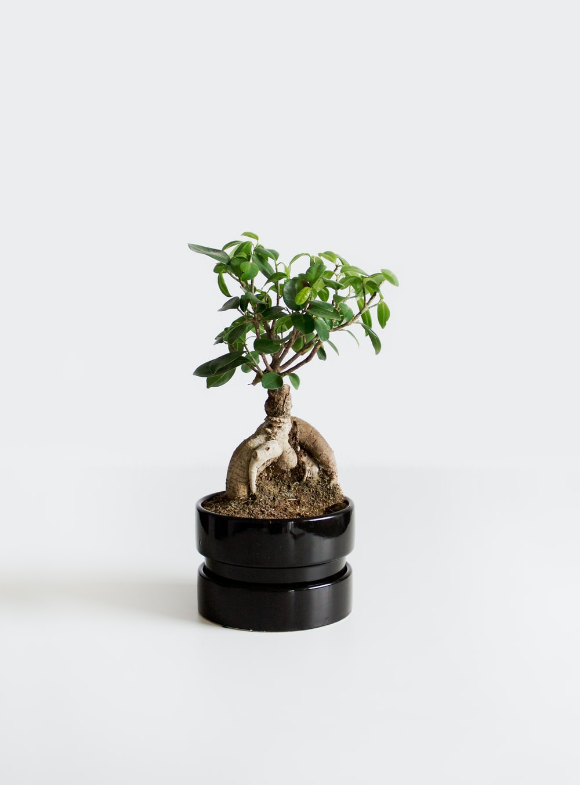
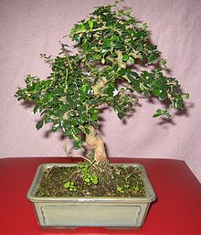

Top 5 Bonsai for beginners
These are some of the easiest Bonsai trees to take care of. If you are a beginner, then you should start with one of these because they are very forgiving if you make a mistake (over-watering, under-watering, cut a major branch, pruning too much, etc.).
To start your Bonsai journey, you're going to need a kit. I recommend a kit like this one.
Your also going to need some tools. This kit contains all the tools you could ever need.
1. Ficus

Ficus is one of the best trees for beginners, as it grows fast, is easy to care for and can also withstand indoor environments that do not have much light, as well as outdoors even in full sun. There are several types and species of ficus, including different sizes of leaves. Look for seedlings that have smaller leaves, which give your bonsai a more natural look.
For more information about this tree check out our
species page.
2. Chinese Elm

Elm is a very resistant deciduous tree: it resists drought, heals pruning wounds well and grows quickly. Also, having the tiny sheets makes it really, really easy to work with. Just place it in an area where it will be exposed to direct sunlight, a substrate that drains well and give it three or four waterings a week in the summer and two or three the rest of the year.
Resists cold and frost up to -17ºC, and high temperatures up to 38ºC.
For more information about this tree check out our
species page.
3. Juniper

Within the genus there are hundreds of species used for Bonsai, being it one of the most traditional in cultivation. Juniper cannot stand being indoors as it requires a lot of sun. Despite this, it is recommended to leave the bonsai in a covered area in the rainiest months, as it does not tolerate too wet soil. By the way, in temperate climates it can even stay in the snow without suffering any damage.
For more information about this tree check out our
species page.
4. Jade

This tree is also great for beginners. It can be placed indoors as well as outdoors and it is very low-maintenance.
Less is more as far as watering jade plants is concerned. The fleshy leaves conserve water so allow extended periods between watering. They are tolerant of temperature changes, but will die in freezing conditions.
For more information about this tree check out our
species page.
5. Carmona (Fukien Tea)

A tropical evergreen shrub native to several countries in the Eastern Hemisphere, the Fukien Tea bonsai tree is named after its place of origin: Fujian, China. Well-loved for its miniscule white flowers, the Fukien Tea is one of the most popular indoor bonsai tree types. Fukien Tea bonsai are naturally amiable to indoor environments, making them a great pick for new growers looking to bring their practice inside.
For more information about this tree check out our
species page.